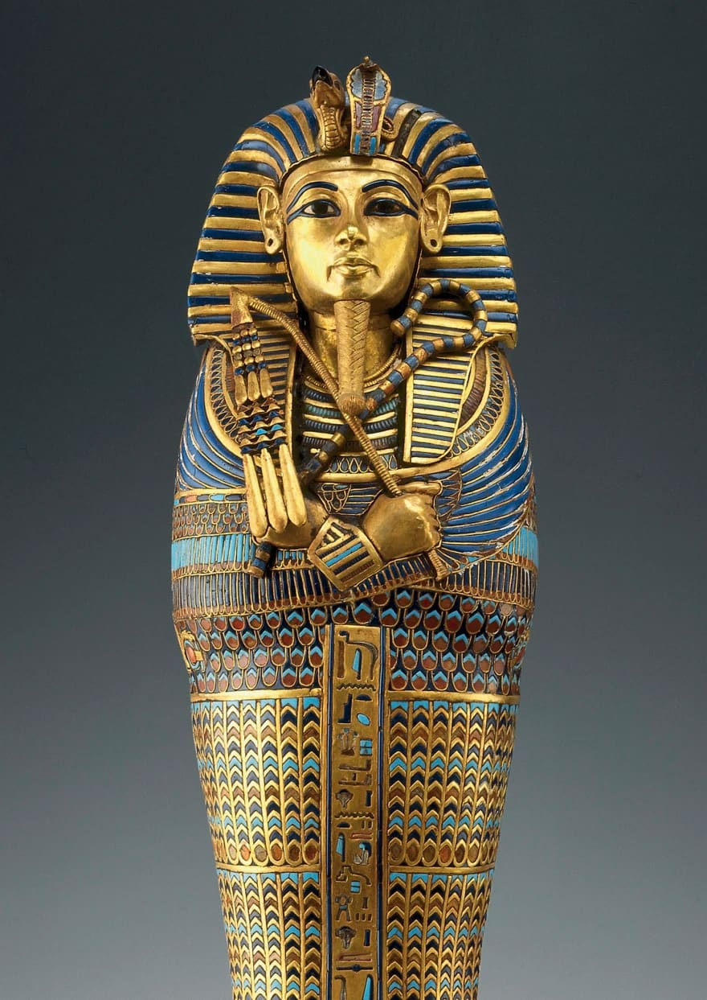
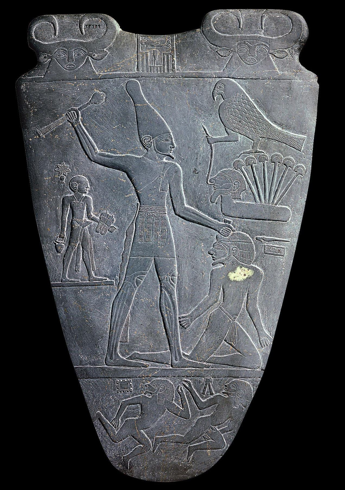

Deus dá a Moisés quatro sinais que demonstram que Moisés é o representante escolhido de Deus.God gives Moses four signs that demonstrate Moses is God’s chosen representative.
Faraó era frequentemente retratado com um cajado de pastor e uma coroa de serpentes, representando uma deusa do Baixo Egito. As serpentes eram associadas à autoridade real.Pharaoh was often depicted with a shepherd’s staff and a snake headdress, representing a goddess of lower Egypt. Snakes were associated with royal authority.
O cajado de Moisés confirmaria sua autoridade perante Faraó e iniciaria cinco pragas, abriria o Mar de Juncos, faria brotar água da rocha e decidiria a batalha contra Amaleque.Moses’ staff would confirm his authority to Pharaoh and initiate five plagues, part the Sea of Reeds, bring water from a rock, and decide the battle against Amalek.
Andreas F. Voegelin, Antikenmuseum Basel e Sammlung Ludwig (2010). Caixão Dourado. NBC News. Tutancâmon com cetro/cajado e chicote e coroa de serpente.Andreas F. Voegelin, Antikenmuseum Basel, and Sammlung Ludwig (2010). Golden Coffin. NBC News. King Tutankhamun with rod/staff and flail/whip and snake headdress.
A frase “com mão poderosa e braço estendido” aparece por todo o Antigo Testamento em referência ao poder de Deus em libertar os israelitas da escravidão no Egito.The phrase “with a mighty hand and an outstretched arm” appears throughout the Hebrew Bible in reference to God’s show of power in delivering the Israelites from slavery in Egypt.
Deuteronômio 26:8 NVI — Assim o SENHOR nos tirou do Egito com mão poderosa e braço estendido, com grande terror e com sinais e maravilhas.Deuteronomy 26:8 NIV So the LORD brought us out of Egypt with a mighty hand and an outstretched arm, with great terror and with signs and wonders.
O uso dessa frase desafia a representação comum do Faraó como aquele com “mão poderosa e braço estendido”.The use of this phrase challenges the common depiction of the Pharaoh as the one with a “mighty hand and outstretched arm.”
Anônimo. Paleta de Narmer (31–30 a.C.). Wikimedia. Paleta de Narmer, detalhe (60 cm de altura). O Faraó Narmer, seguido por seu carregador de sandálias, está esmagando a cabeça de um inimigo. A “postura da maça” foi padrão por mais de 3.000 anos no Egito. Veja o artigo da Khan Academy sobre a Paleta de Narmer para mais informações.Anonymous. Palette of Narmer (31-30 B.C.E.). Wikimedia. Narmer Palette, detail (2 ft. tall). Pharaoh Narmer, followed by his sandal bearer, is smiting the head of a foe. The “mace-pose” was standard for over 3,000 years in Egypt. See the Khan Academy article on the Narmer Palette for more information.
O propósito expresso para a libertação dos israelitas é que eles pudessem adorar e servir a Deus.The expressed purpose for the release of the Israelites is that they might worship and serve God.
YHWH, o Deus de Israel, diz isto: “Deixa ir o meu povo, para que possa celebrar uma festa em minha honra no deserto.”YHWH, the God of Israel, says this: “Send away my people, that they may celebrate a festival in my honor in the wilderness.”
Este é o primeiro anúncio profético na Bíblia, seguindo o formato padrão, “Assim diz YHWH” (cf. Êxodo 7:16, 8:1).This is the first prophetic announcement in the Bible, following the standard format, “Thus says YHWH” (cf. Exod. 7:16, 8:1).
Faraó recusa as exigências de Deus porque não conhece quem é YHWH. O propósito do confronto é demonstrar ao Egito e ao resto do mundo quem é YHWH.Pharaoh refuses God’s demands because he does not know who YHWH is. The purpose of the confrontation is to demonstrate to Egypt and the rest of the world who YHWH is.
Mas Faraó disse: “Quem é YHWH, para que eu ouça a sua voz e deixe Israel ir? Não conheço YHWH, e além disso não deixarei Israel ir.” “Deixa o meu povo ir!”But Pharaoh said, “Who is YHWH that I should listen to his voice by sending Israel away? I do not know YHWH, and furthermore I will not send Israel away.” “Let my people go!”
Há duas maneiras principais pelas quais o texto expressa a exigência de libertação dos israelitas: שלח (“deixar ir”; piel) e הלך (“deixar ir”; hiphil).There are two main ways the text expresses the demand for the release of the Israelites: שלח (“send away”; piel) and הלך (“let go”; hiphil).
Em seis das dez pragas, Deus deixa seu propósito claro — que “você saberá que Eu sou YHWH”.In six of the ten plagues, God makes his purpose clear—that “you will know that I am YHWH.”


Qual é o propósito do confronto de Moisés com Faraó?What is the purpose of Moses’ confrontation with Pharaoh?